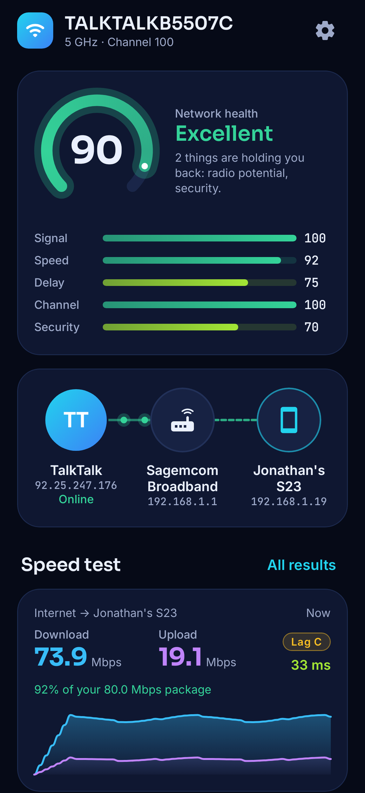
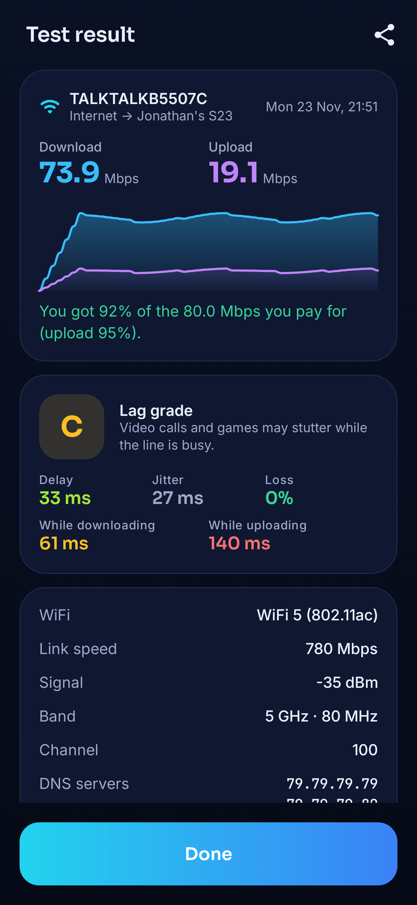
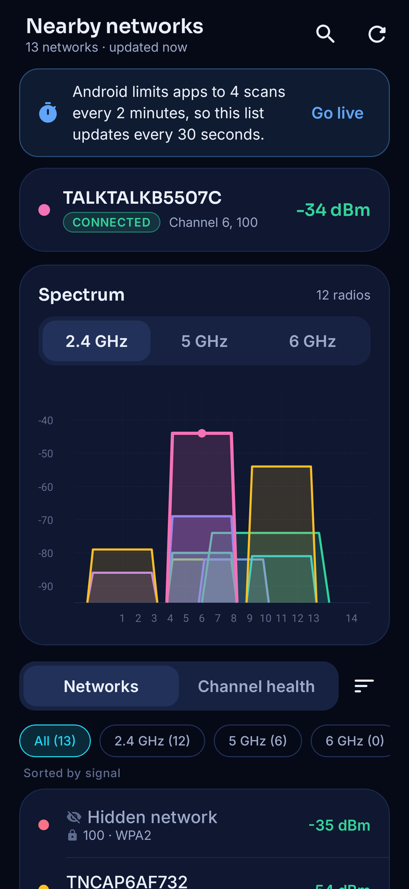
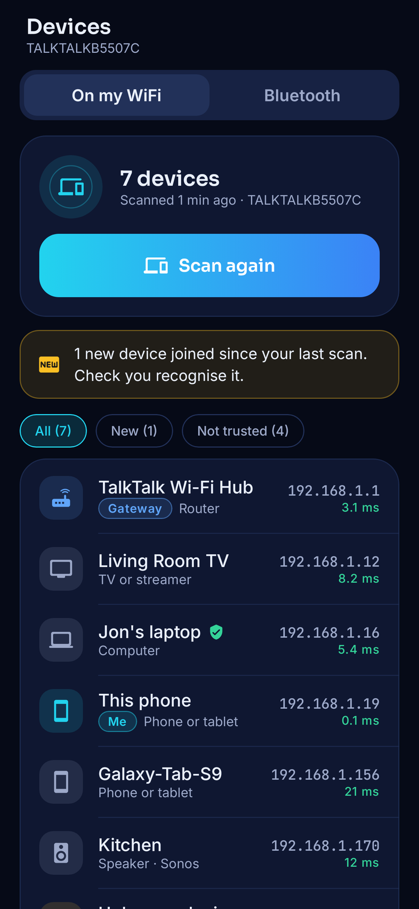
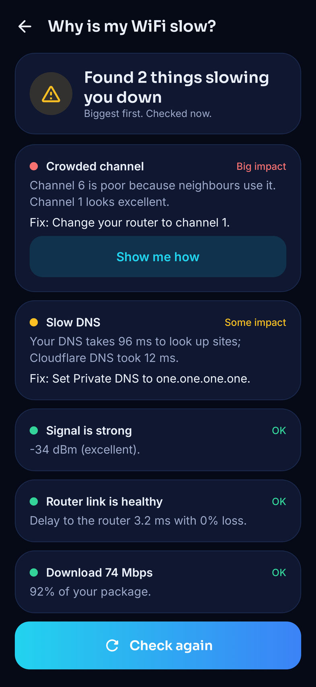
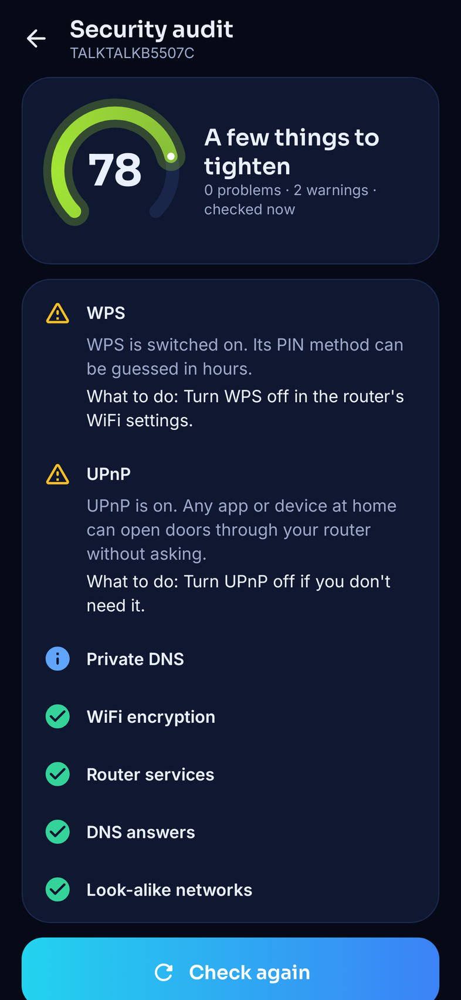
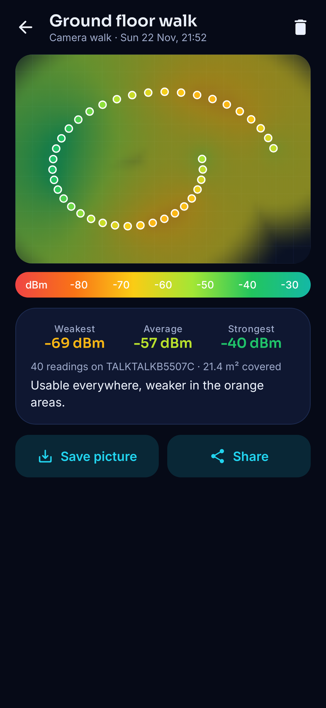
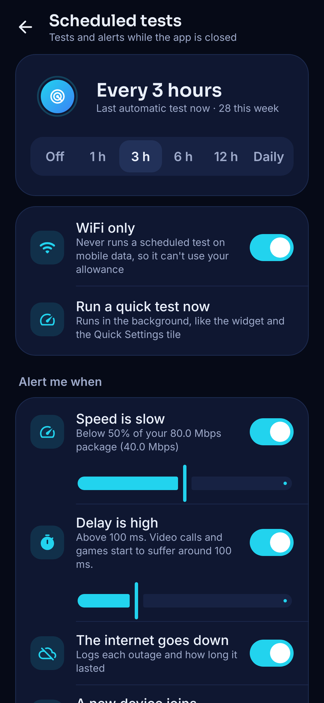

Find out why your WiFi is slow, then fix it.
WiFi Scan tests your speed, rates your signal and every channel around you, finds every device on your WiFi and checks your router for weak spots. Then it puts it into plain words: what is slowing you down, biggest first, and exactly what to change.
Map the signal around your home, test automatically while the app is closed, get an alert when the internet drops or slows, and send your provider a PDF report as proof.
WiFi Scan includes a port scanner and other network tools. What the law says
- Version 1.0.0
- Android 8 or later
- 3.5 MB
Free, with nothing to unlock. No adverts, no account with the developer, no tracking. Compare or read the release notes.
Chrome may say the file might be harmful. It shows this for app files that do not come from Google Play. Choose Download anyway.

- No advertsNone in the app and none on this site.
- Nothing to buyEvery feature is free, with nothing locked.
- No accountNothing to sign up for.
- Stays on your phoneYour tests, devices and maps never leave it.
A look inside
These are the real screens, drawn from the app's own code with made-up networks and results. Swipe or scroll sideways to see them all.







How it works
WiFi Scan reads what your phone already knows about your WiFi, listens to the networks around you, and runs real tests against Cloudflare's speed test servers.
Open it
Your network health score appears straight away: signal, speed, delay, channel and security, each with a bar and advice.
Test it
Run a speed test, scan the channels and find the devices on your network. Or tap Why is my WiFi slow? and let it check everything at once.
Fix it
Follow the steps for your router, from BT, EE, Plusnet, Sky, Virgin Media, TalkTalk and Vodafone hubs to any other, then test again to see the difference.
Everything is in, and all of it is free
Nothing below is held back for a paid tier, because there is no paid tier.
Speed and signal
- A proper speed test
- Download, upload, delay, jitter, packet loss and the delay while the line is busy, with a lag grade. Private Cloudflare servers by default; M-Lab if you want an open-data test.
- Your package, checked
- Enter what you pay for and every test shows the percentage you are getting.
- Live signal
- Signal, link speed, WiFi generation and live graphs, plus a Signal Finder that beeps faster as you walk towards the best spot.
- Mobile data too
- 4G and 5G signal readings, and a mobile speed test even while you are on WiFi.
Your network
- Channel ratings
- Every channel on 2.4, 5 and 6 GHz rated from crowded to excellent, with your own router left out, and the best channel to switch to.
- Devices on your WiFi
- Names and models from the router, Windows, Bonjour and UPnP, with your own labels, trusted devices and new-device alerts.
- Security check
- WiFi encryption, WPS, risky router services, UPnP, DNS hijacking, look-alike networks and more, scored out of 100 with fixes.
- Toolbox
- Ping, traceroute, DNS lookup and DNS speed test, port scanner for your own devices, Wake-on-LAN, whois, IP calculator and MTU test.
Find the dead spots
- Floor plan heatmaps
- Use a photo of your floor plan or a blank grid, tap where you stand, and watch the map fill in.
- Camera walk
- Walk around holding your phone and it maps the signal as you go, using the camera to track where you are.
- Saved places
- Save home, work and family's, and compare their speed, delay and heatmaps side by side.
Keeps watch
- Scheduled tests
- Every hour to once a day, WiFi only if you like, while the app is closed.
- Alerts
- A notification when your speed falls below your level, the delay climbs, the internet goes down or a new device joins.
- Reports and backup
- PDF reports and CSV spreadsheets for your provider, and a backup locked with your own password.
- Widgets and tile
- Your signal and last test on the home screen, and a one-tap speed test in Quick Settings.
Private by design
No servers of our own
There is no account and no server. Everything WiFi Scan keeps stays on your phone.
No ads, no tracking
There is no advertising, analytics or tracking, in the app or on this site.
Only what you start
WiFi Scan goes online for the tests and tools you run, and for scheduled tests if you turn them on.
Use it within the law
WiFi Scan is for checking and improving your own network. Its port scanner and device tools only work on home and office networks, and must only be pointed at equipment you own or have permission to test. Seeing a network in the list does not give you permission to join it.
- Computer Misuse Act 1990. Accessing, or trying to access, a computer, router or other device without permission is an offence under section 1, and doing anything to impair how it works is an offence under section 3. Only scan or test devices you own or have permission to test.
- Communications Act 2003. Using someone else's internet connection without permission, for example by joining their WiFi, is an offence under section 125.
- UK GDPR and the Data Protection Act 2018. Device names on a shared network can identify the people who use them. Do not record or share details of other people's devices.
Laws differ in other countries. If you are not in the UK, the rules where you are apply. Read the terms of use.
Installing and updating
WiFi Scan is not on Google Play, so your phone asks a couple of extra questions the first time.
Download the app file
Tap Download on your phone. The file is called WiFiScan.apk and is about 3.5 MB. If Chrome says the file might be harmful, choose Download anyway. First tick the box to say you will use the app within the law.
Allow the install
Open the file. The first time, Android asks you to allow your browser to install apps. Allow it, go back and tap Install. If Google Play Protect steps in, choose More details, then Install anyway.
Updating later
WiFi Scan does not update itself. In Settings or About, Check for updates opens the release notes page in your browser. Install the new file over the old one and your history, devices, places, heatmaps and settings are kept.
Version 1.0.0, released 23 November 2026. See the release notes, or check your download.
Questions
Is WiFi Scan really free?
Yes. There is no paid version, no subscription and no adverts, and nothing in the app is locked.
Is it on Google Play?
No. WiFi Scan is a personal project and is downloaded from this site as an Android app file. It needs Android 8 or later.
Why does it need my location?
Android only lets apps see WiFi names and nearby networks when location permission is granted. WiFi Scan never reads, stores or sends your location.
Which speed test servers does it use?
Cloudflare's speed test by default, which keeps your results private. You can choose M-Lab instead; M-Lab publishes every test as open research data, including your IP address, so the app asks you first.
How much data does a speed test use?
Usually 50 to 400 MB depending on your speed. Scheduled tests are shorter, and can be set to run on WiFi only so they never use your mobile allowance.
Why does live scanning only update every 30 seconds?
Android limits apps to four WiFi scans every two minutes. WiFi Scan shows you how to switch that limit off in Developer options, after which it scans every five seconds.
Can it scan other people's networks or devices?
No. The device list and port scanner only work on the network you are connected to, and the port scanner refuses internet addresses. Use them on your own network, or one you have permission to test.
Can it change my router settings?
No. It tells you what to change and gives step-by-step guides for BT, EE, Plusnet, Sky, Virgin Media, TalkTalk and Vodafone hubs, with a button to open your router's page.
Does the camera walk record video?
No. The camera is only used to track where you are as you walk. Nothing it sees is saved or sent.
Does it work on an iPhone?
No. WiFi Scan is for Android phones and tablets only.
Who made it?
WiFi Scan is made by Jonathan Jackson, an independent developer in the United Kingdom.
Get the speed you pay for
Free, with no adverts and nothing to unlock. Made by the developer of several other free Android apps: see them all.